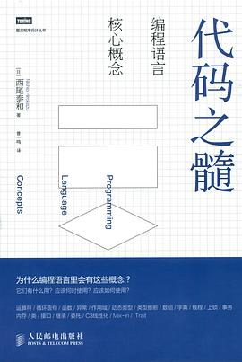

代码之髓
对于各种程序设计语言的特性进行了较为精炼的描述，对于语言的特性、各种语言的设计都进行了大致的介绍，确实很能开阔视野~另一方面，有些理解确实加深了，比如委托的概念，之前在C#中学习感觉实在有些朦胧，本书用Java演示了一下，就清晰多了~
作品信息
| 作者 | [日] 西尾泰和 |
| 译者 | 曾一鸣 |
| 出版社 | 人民邮电出版社 |
| 出品方 | 图灵教育 |
| 出版年 | 2014-8 |
| ISBN | 9787115361530 |
| 页数 | 236 |
| 装帧 | 平装 |
| 定价 | 45.00元 |
| 原作名 | コーディングを支える技術 ~成り立ちから学ぶプログラミング作法 |
| 丛书 | 图灵程序设计丛书 |
说过什么
2016-04-06 22:58:07
读过 · 时间来自广播，短评来自标记页
对于各种程序设计语言的特性进行了较为精炼的描述，对于语言的特性、各种语言的设计都进行了大致的介绍，确实很能开阔视野~另一方面，有些理解确实加深了，比如委托的概念，之前在C#中学习感觉实在有些朦胧，本书用Java演示了一下，就清晰多了~
最后一次看到是 2026-08-01T11:00:51+10:00 · 豆瓣原页